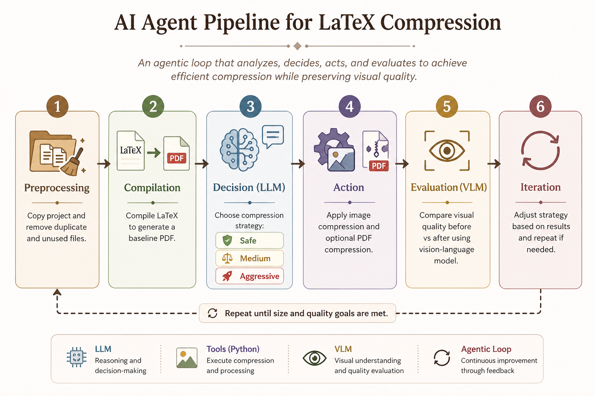

Agentic AI for LaTeX Compression
LLMs, VLMs, and Agentic Decision-Making Pipeline
Objectives
- In this project, I designed and implemented an agentic AI pipeline to automatically compress a LaTeX project while preserving visual quality.
- The system integrates:
- Large Language Models (LLMs) for decision-making
- Vision-Language Models (VLMs) for visual quality evaluation
- Deterministic Python tools for execution
- The goal is to simulate an AI agent that can analyze, decide, act, and verify with constraints such as limited budget and quality requirements.
Pipeline Overview
I decided to follow an iterative agentic loop. Instead of applying a fixed compression script, the pipeline dynamically adapts its behavior based on intermediate results.
- Step 1: Preprocessing – Copy project, remove duplicate and unused files
- Step 2: Compilation – Compile LaTeX to generate a baseline PDF
- Step 3: Decision (LLM) – Choose compression strategy (safe, medium, aggressive)
- Step 4: Action – Apply image compression and optional PDF compression
- Step 5: Evaluation (VLM) – Compare visual quality before vs after
- Step 6: Iteration – Adjust strategy and repeat if needed
This loop continues until both size constraints and visual quality requirements are satisfied.

Agentic Design
My approach is designed as an agentic pipeline rather than a fixed script. The key idea is that the model does not directly perform compression, but instead decides what actions to take based on the current state of the system.
The pipeline follows an observe -> decide -> act -> evaluate loop:
- Observe: Measure project size and PDF size
- Decide: LLM selects a compression strategy
- Act: Python tools apply compression
- Evaluate: VLM checks visual quality
- Iterate: System refines strategy based on feedback
I decided to separate reasoning (LLM) from execution (Python tools), making the agent model more reliable and easier to control.
Models Used
My system uses both language and vision models, each responsible for a different part of the pipeline.
- LLM (GPT-4o-mini): selects compression strategies based on current size and history
- VLM (GPT-4o): evaluates visual quality and selects important pages to inspect
The LLM is used for structured decision-making with constrained outputs, while the VLM is used to analyze visual differences between original and compressed PDFs.
This separation allows the system to combine reasoning with perceptual evaluation.
LLM Prompt (Strategy Selection)
The LLM acts as the decision-maker of the agent. It receives the current system state and selects the next compression strategy.
You are the orchestrator of a LaTeX compression agent.
Goal:
- Project zip size must be under {state["zip_limit_mb"]} MB.
- PDF size must be under {state["pdf_limit_mb"]} MB.
- Visual quality must remain acceptable.
Current state:
- Iteration: {state["iteration"]}
- Zip size: {state["zip_mb"]:.2f} MB
- PDF size: {state["pdf_mb"]:.2f} MB
- Previous strategies tried: {state["history"]}
Choose the next compression strategy.
Choose one: safe, medium, aggressive, stop.
Rules:
- Choose "stop" only if both size goals are met.
- If size is slightly above the limit, choose "safe".
- If size is clearly above the limit, choose "medium".
- If previous attempts failed and size is still too high, choose "aggressive".
- If a previous strategy had quality_ok=false, choose a less aggressive strategy than that attempt.
- Do not repeat strategies that already failed.
- Return ONLY valid JSON, no markdown, no code fence:
Format:
{{"strategy": "safe|medium|aggressive|stop", "reason": "short reason"}}
The prompt ensures structured reasoning and that the model behaves deterministically, making the pipeline stable and predictable.
VLM Prompt (Page Selection)
To reduce cost, the system does not evaluate every page. Instead, the VLM selects the most important pages using a contact sheet.
You are helping evaluate PDF compression quality.
Look at this contact sheet of a PDF with {page_count} pages.
Each thumbnail is labeled with a 0-based page number.
Choose up to {max_pages} pages that are most important to inspect after compression.
Prioritize:
- pages with large images
- pages with figures
- pages with tables
- pages with small visual details
- visually dense pages
- Return ONLY valid JSON, no markdown, no code fence:
Format:
{{"pages": [0, 2, 5], "reason": "short reason"}}
"""
This step allows the agent to focus on the most visually sensitive parts of the document while minimizing API usage.
VLM Prompt (Quality Evaluation)
The VLM compares screenshots of the original and compressed PDF to determine whether visual quality is acceptable.
before_imgs: list of og images to compare
after_imgs: list of compressed imgs to compare
For each image to compare, check image quality and return true or false
"""
content = [
{
"type": "text",
"text": """
Compare each before/after pair of PDF screenshots.
The before image appears first, followed by the compressed after image.
Evaluate whether the compressed PDF quality is visually acceptable.
Check:
- text readability
- image clarity
- layout consistency
- no severe artifacts
- no obvious distortion or over-blurring
- Return ONLY valid JSON, no markdown, no code fence:
Format:
{"quality_ok": true|false, "reason": "short reason"}
}
This enables the system to perform visual validation automatically, replacing manual inspection with a learned perception model.
I made sure to enforce structured JSON outputs from all models, to allow seamless integration between model decisions and deterministic Python execution.
Visual Quality Evaluation
Instead of checking every page of the PDF, I used a more efficient approach:
- Generate a contact sheet of all pages
- Ask the VLM to select the most visually important pages
- Render only those pages before and after compression
- Compare them using the VLM
This significantly reduces cost while still focusing on the most relevant parts of the document, such as figures, tables, and dense content.
Results & Discussion
My approach successfully reduced both project size and PDF size while preserving acceptable visual quality.
In many cases, the agent selected a medium compression strategy first, then adjusted based on feedback from the VLM. The iterative loop allowed the system to balance size reduction and quality preservation effectively.
One important observation is that performance did not depend heavily on using the most powerful models. Instead, the structured pipeline and feedback loop were the main contributors to success.
Final Reflection
This project shows how combining LLMs, VLMs, and deterministic tools can create a practical and efficient AI system.
The most important takeaway is that agentic behavior does not come from the model alone, but from how the system is structured. Even relatively lightweight models can perform well when integrated into a well-designed pipeline with clear feedback loops.
Overall, this project reflects how modern AI systems are more commonly built as decision-driven pipelines rather than single rigid models.